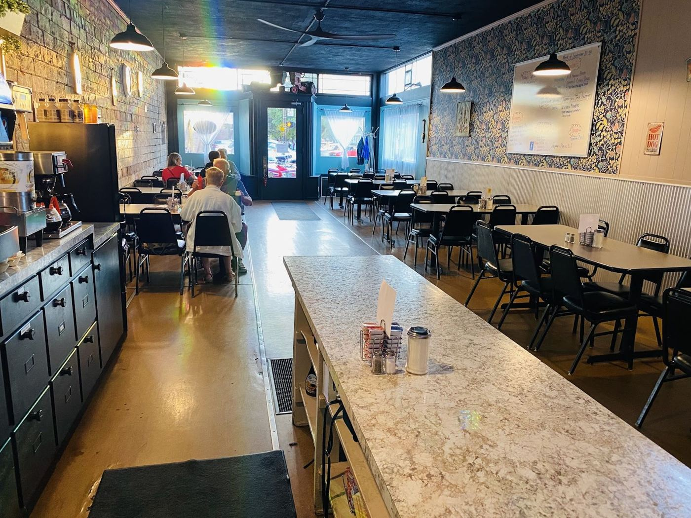

Stack ’em up
Cinnamon roll pancakes, blueberry short stacks, French toast — topped with locally sourced maple syrup, according to the regulars.
1 pancake
Off the griddle


Kept the coffee filled
“Didn’t disappoint! Breakfast selections are pretty standard here. Great little unknown restaurant in the middle of downtown Upper Sandusky. Server was friendly & kept the coffee cup filled. Pricing is reasonable for the quality & quantity of food. Bacon is…”